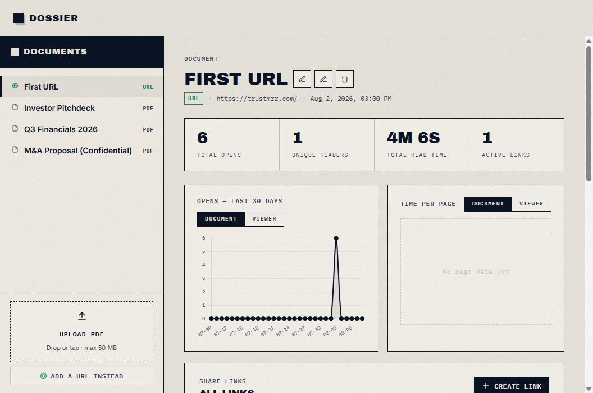
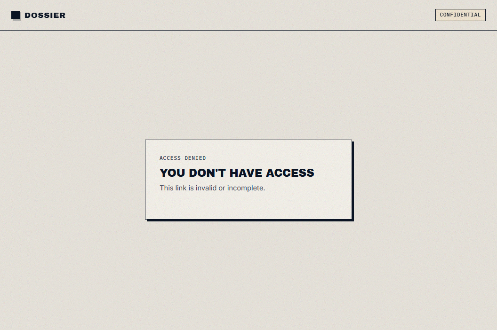
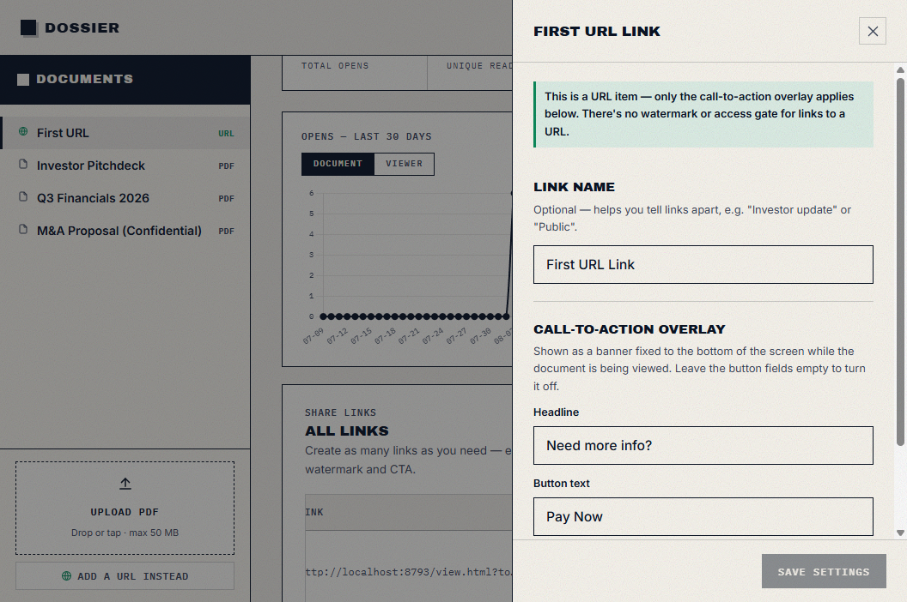

// DOCUMENT SHARING CONTROL
Add dynamic watermarks to every page; track viewer's activity page by page.
You email a PDF and hope for the best. No proof of who opened it.
If the file leaks, nothing ties it back to a viewer. Screenshots travel freely.
You cannot see read time, return visits, or which pages mattered.
Dossier replaces the attachment with a controlled link — watermarked, gated, and fully tracked.
02 — FEATURES
WATERMARK
Every page is stamped with the viewer’s email, IP, and timestamp — on screen and in downloads.
ACCESS
Decide who gets in before the PDF opens. Keep sensitive files off the open web.
TRACKING
See opens, unique readers, total read time, and time per page — for every link you create.
CTA
Add a fixed banner under the PDF or URL view. Turn readers into next steps.
03 — PRODUCT
Upload once. Create links. Watch engagement in real time.



04 — HOW IT WORKS
Drop your PDF into Dossier.
Spin up one or many share links.
Set watermarks, OTP, expiry, download.
Send the link by email, Slack, or CRM.
Watch opens and page time land live.
05 — AFTER YOU SEND
Not just a download count. The full reading story.
Which email opened the file — and when.
Return visits and total opens per reader.
Total time on the document and per page.
Campaign-ready tracking across multiple links.
06 — USE CASES
SALES
Traceable watermarks and reader analytics on every investor or buyer touch.
LEGAL
Named recipients, OTP gates, and audit-friendly session logs.
HR / OPS
Controlled access and download rules for internal sensitive docs.
// READY
Upload a file. Create a link. Start tracking with one click.
Open Dossier ↗